Network Campus City
몽골 훈누시 캠퍼스 시티 도시설계
A New Growth Engine for Mongolia
7개 대학을 네 클러스터로 묶고 LRT 순환선 7개 역을 포디움과 직결한 캠퍼스 신도시다.
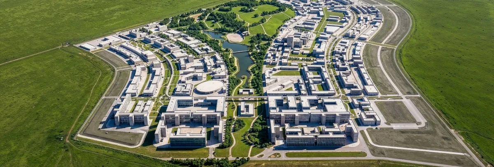
캠퍼스를 한곳에 모으지 않고 도시 전체에 그물처럼 퍼뜨렸다. LRT 역을 중심으로 연구·교육·주거·일상이 걸어서 5분 안에 만난다.
대상지의 지형과 기존 도시 조직을 분석해 이동, 학술, 교류 세 네트워크를 짰다.
Three Networks
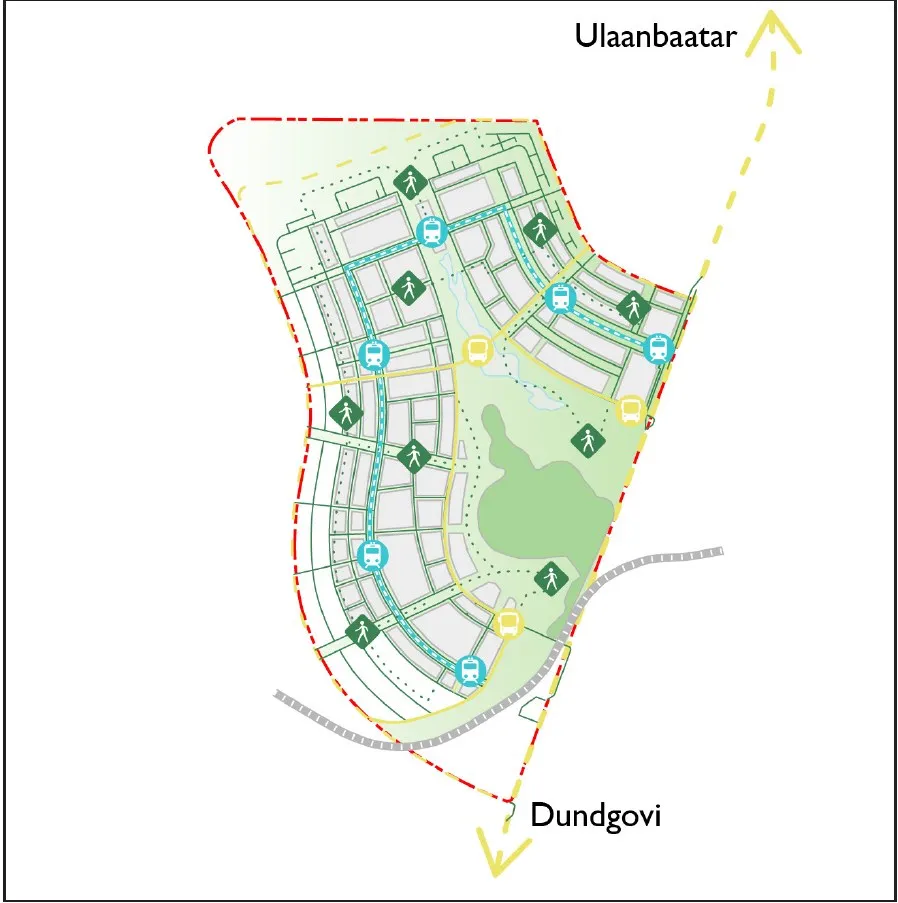
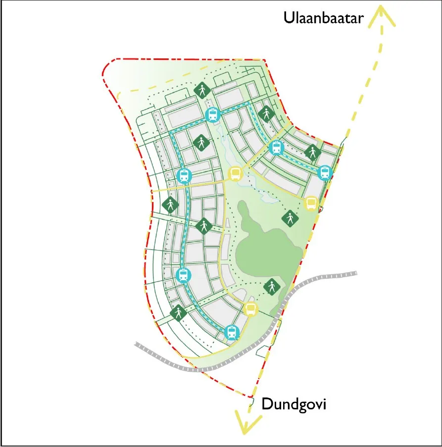
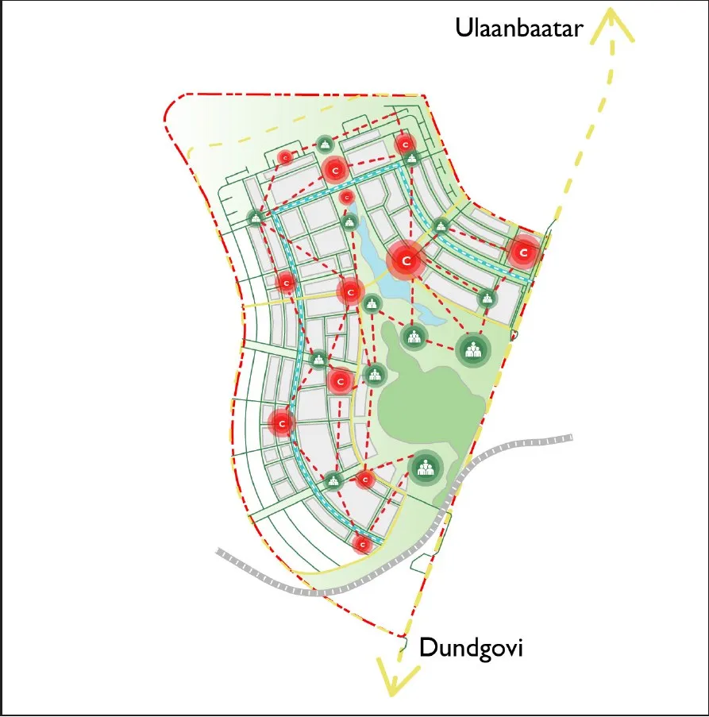
Master Plan
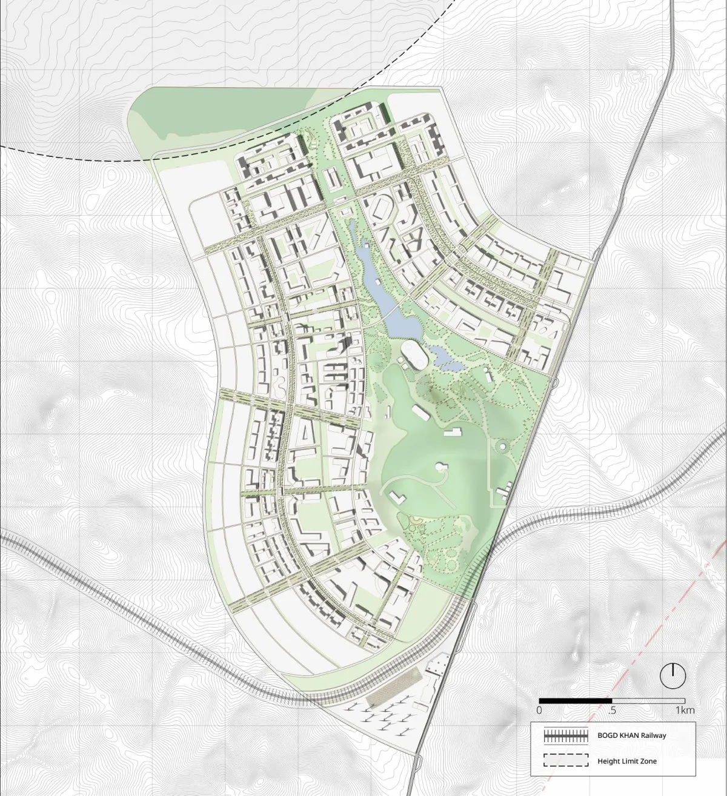
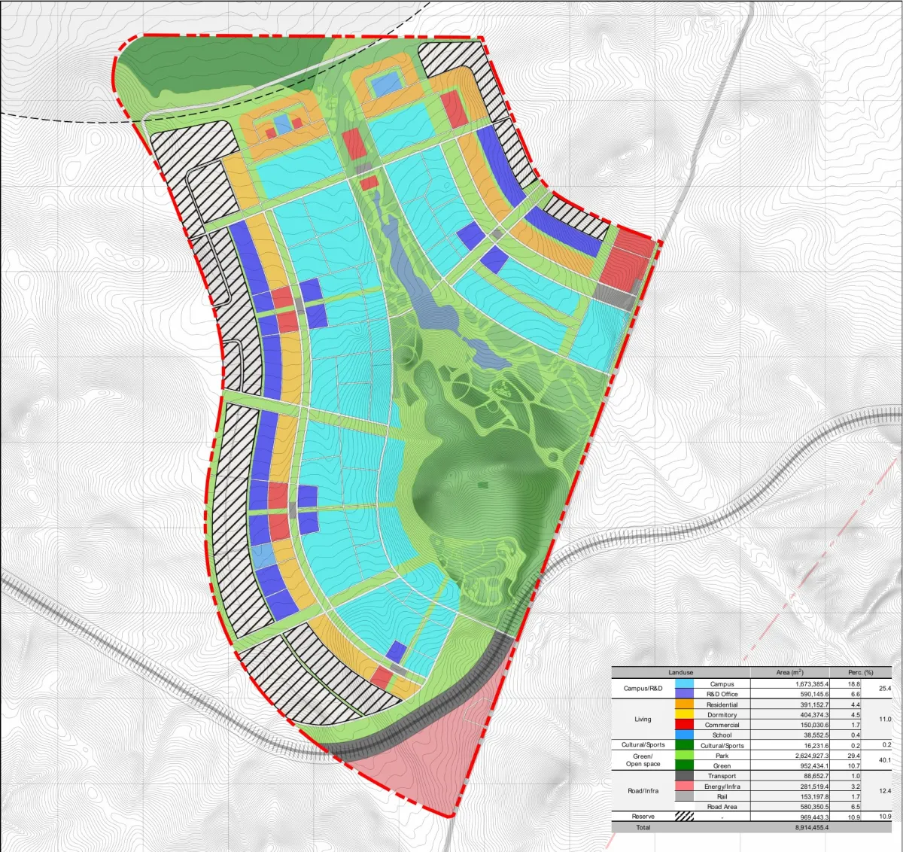
Campus Cluster
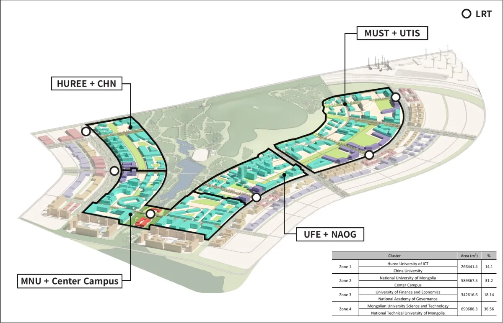
Four Clusters
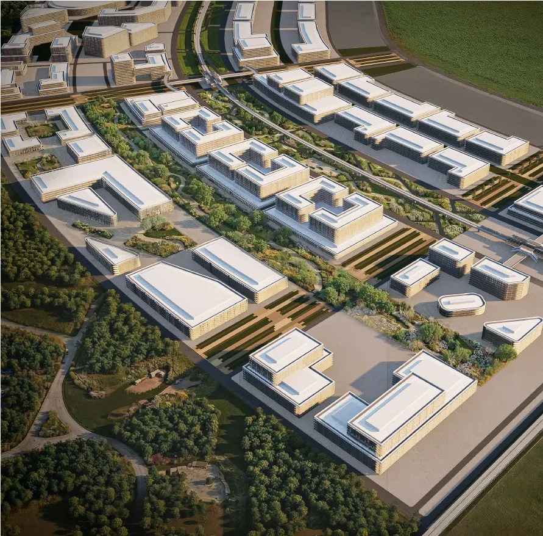
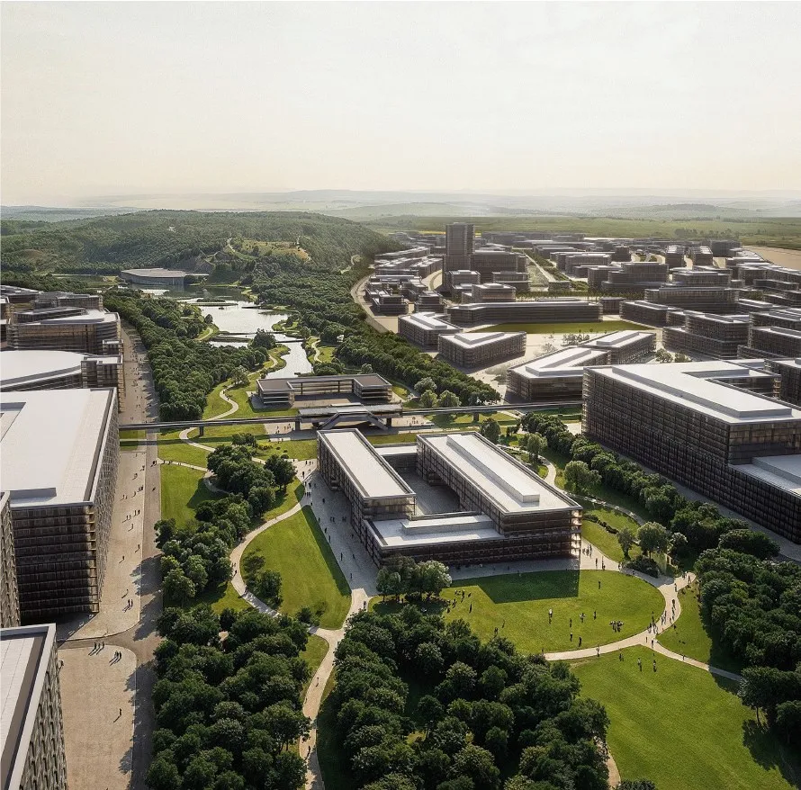
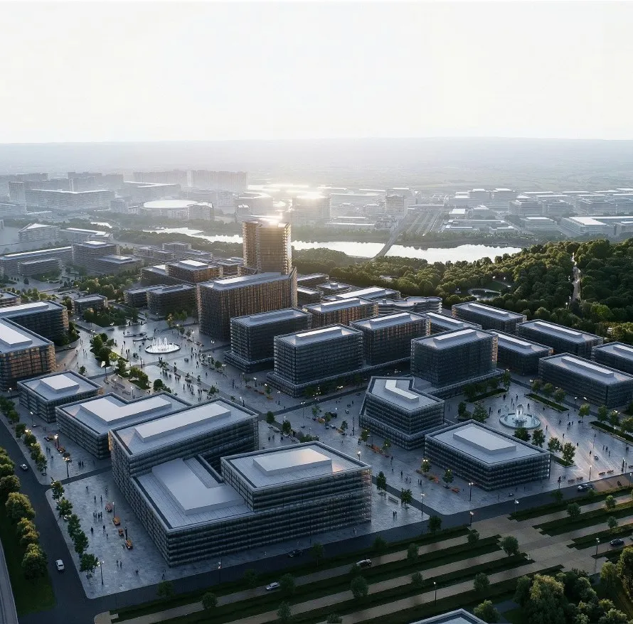
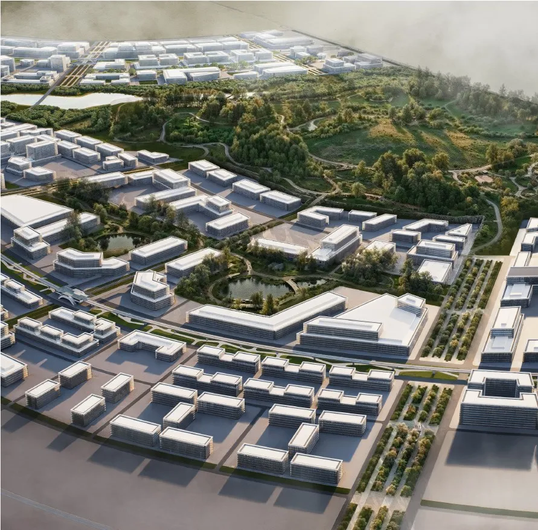
Phase Plan
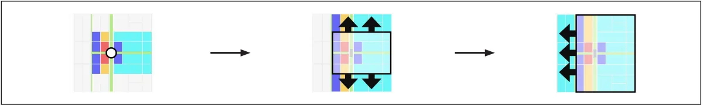